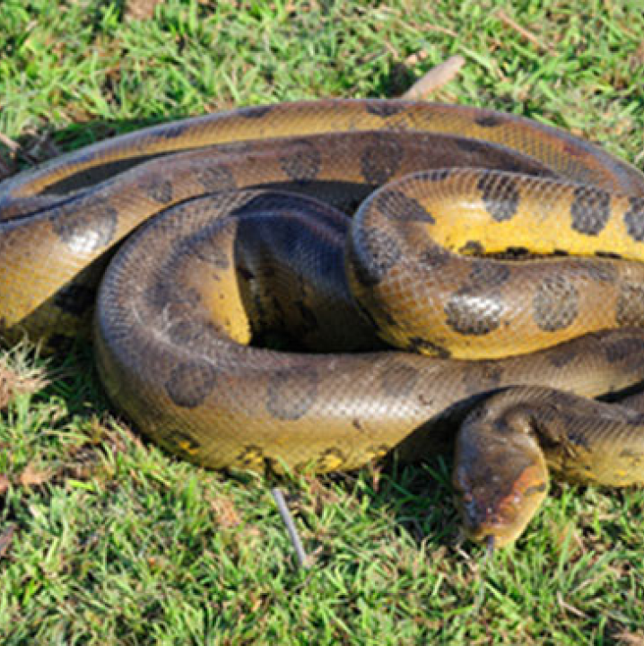

Balonowy Sklep Wężowy

Opis gatunku
Anakonda
Anakonda to rodzaj węży z rodziny boi (Boidae), znany z bycia jednym z najdłuższych i najmocniejszych węży na świecie. Anakondy występują głównie w Ameryce Środkowej i Południowej, gdzie zamieszkują różne typy lasów tropikalnych i subtropikalnych. Są to zwierzęta o różnej wielkości, od mniejszych gatunków, takich jak anakonda zielona (Eunectes murinus), do gigantycznych, jak anakonda zielonogłowa (Eunectes beniensis).
Cena: 100.00 zł
Anakondy należą do rodziny Boidae, która obejmuje również inne znane gatunki węży, takie jak boa konstruktory. Anakondy są wyróżniane przez swoją długą, smukłą budowę ciała, która pozwala im na łatwe poruszanie się przez różne środowiska, w tym przez wody. Ich skóra jest zazwyczaj szara, zielona lub brązowa, a niektóre gatunki mają charakterystyczne wzory na głowie. Anakondy są zwierzętami drapieżnymi, które polują na różne gatunki zwierząt, w tym na ryby, płazy, małe ssaki i inne gady. Ich dieta jest zróżnicowana i zależy od dostępności pokarmu w danym środowisku. Anakondy są znane z przenoszenia swoich zdobywczyń na powietrze, co jest jedną z ich unikalnych cech. Anakondy są zwierzętami nocnymi, choć niektóre gatunki mogą być aktywne również w ciągu dnia. Ich grzechot jest słabo rozwinięty w porównaniu do innych węży, ale mogą wydawać dźwięki podczas interakcji z innymi osobnikami lub w odpowiedzi na zagrożenie. Wiele gatunków anakond jest zagrożonych wyginięciem, często z powodu utraty siedlisk, polowań i handlu. Ochrona tych unikalnych zwierząt wymaga zarówno działań na poziomie lokalnym, jak i międzynarodowym, aby zapewnić ich przetrwanie i zachowanie w naturalnym środowisku.